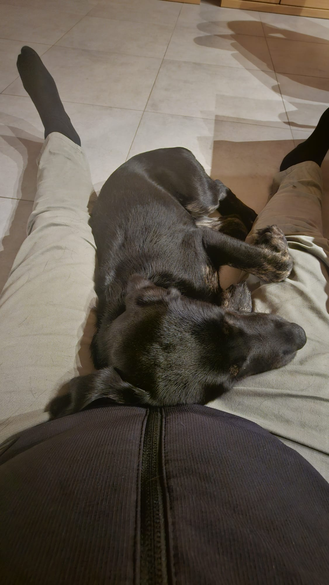

Wir heiraten standesamtlich in Hamburg und feiern unsere Hochzeit in Andernach!
Datum: Juli 2025 in Andernach | Standesamt: 1. Juli 2025 in Hamburg
Katharina und Dirk trafen sich im Jahr 2016 in Köln, und es war Liebe auf den ersten Blick.
Seitdem haben sie viele Abenteuer zusammen erlebt, und am 1. Juli 2025 werden sie standesamtlich in Hamburg heiraten, bevor sie im Juli 2025 in Andernach mit Freunden und Familie feiern.
Die standesamtliche Trauung findet am 1. Juli 2025 im Standesamt Hamburg statt. Nur die engste Familie ist eingeladen.
Unsere große Feier findet im Juli 2025 im wunderschönen Andernach statt. Wir freuen uns, diesen Tag mit all unseren Lieben zu teilen.
Euer Beisein ist das größte Geschenk, aber falls ihr uns eine Freude machen möchtet, findet ihr hier unsere Wunschliste.